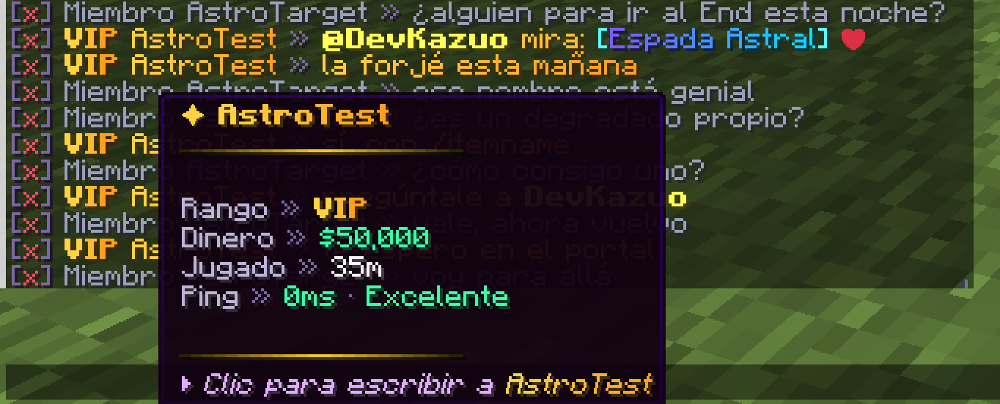

Chatalyst · Chat para Minecraft
Tu servidor.
Su propia voz.
Chatalyst es un plugin de chat premium para Minecraft. Dale personalidad a cada mensaje con formatos a medida, nombres interactivos y canales dedicados. Añade los extras cuando los necesites.
En BuiltByBit · una compra, todos tus servidores
Instalar Chatalyst Unirme a Discord

Empieza aquí
De la instalación a la primera conversación.
Prepara el chat y sigue a tu ritmo.
-
Instala Chatalyst
Comprueba los requisitos, añade el plugin a tu servidor y sigue la guía de activación.
-
Configura tu chat
Elige tus formatos, organiza los canales y dale a cada conversación su propio estilo.
-
Activa los extras
Usa
/cht featurespara ver el ajuste y el archivo de cada extra. Activa solo lo que necesite tu servidor.
El chat es lo primero
Cada mensaje, con tu identidad.
Las herramientas para darle a tu comunidad una voz clara y reconocible.
Tu estilo en cada detalle
Colores y degradados de MiniMessage, prefijos, tarjetas al pasar el ratón y acciones al hacer clic. Crea un formato propio.
Un lugar para cada conversación
Organiza el chat general, el del equipo y el de comercio en canales, cada uno con su formato y sus destinatarios.
Conversaciones cuidadas
Los mensajes privados, las menciones y los filtros de chat forman parte de la base. Ajusta su configuración a tu comunidad.
Extras opcionales
Más posibilidades. Tú eliges.
El correo, los sorteos, el mercado y la integración con Discord son extras. En una instalación nueva vienen desactivados: tú decides qué añadir al chat.
Sigue explorando